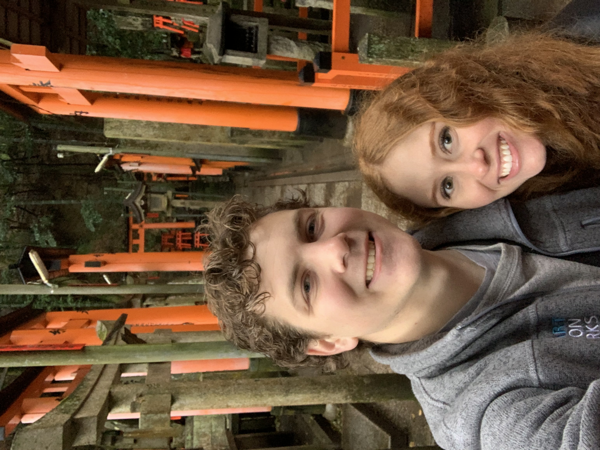

Tanner Allen
Personal Info:
- Major: Software Development and Construction Management
- Year in School: Senior
- Dream Job: Making or working on video games.
- How I De-stress: Hang out with my wife.
Five Favorite Book Series:
- The Black Company by Glenn Cook
- The Kingkiller Chronicle by Patrick Rothfuss
- A Song of Ice and Fire by George R. R. Martin
- Red Rising Saga by Pierce Brown
- Starfishers by Glenn Cook
Five Favorite Movies:
My Haiku:
This haiku is about my work/life balance, which seems to be a little out of control.
Lot's of time at school
Sometimes I get some work done
Mostly I'm at school
Personal Interests:
I enjoy playing tabletop games. For the most part, I play Warhammer 40,000 (40K). 40K is a tabletop strategy wargame in which you collect and paint plastic miniatures. Each miniature has associated rules that you use in the game. It is a great fit for my brothers and I who love playing board games, and we are all artistic to some degree, making it the perfect amalgamation of our interests. I don't play as often as I'd like, but when I do, I play as my favorite faction, "The World Eaters," a sect of post-human berserker supersoldiers who worship the god of blood, Khorne.
On top of that, I love to travel with my wife Madison. Just this last year we took a trip to Japan, somewhere we've both wanted to go. The picture at the top of this page is from that trip. The food was amazing, especially considering how much I like sushi and other seafood, and the historical sites were incredible. A new favorite food of mine from that trip is called "takoyaki" which is sliced up bits of octopus and cooked in a dough ball. Delicious.
My other interests include reading books, watching tv/movies, playing video games, and sports like soccer and basketball.
| Mon | Tues | Wed | Thurs | Fri | |
|---|---|---|---|---|---|
| 10:00 | Work | CS 2550 Web Programming I | Work | CS 2550 Web Programming I | |
| 11:00 | |||||
| 12:00 | |||||
| 1:00 | CS 2300 Discrete Math | CS 2300 Discrete Math | |||
| 2:00 | CS 2420 Algorithms and Data Struct. | CS 2420 Algorithms and Data Struct. | |||
| 3:00 | CS 2370 C Plus Plus | CS 2370 C Plus Plus | |||
| 4:00 |